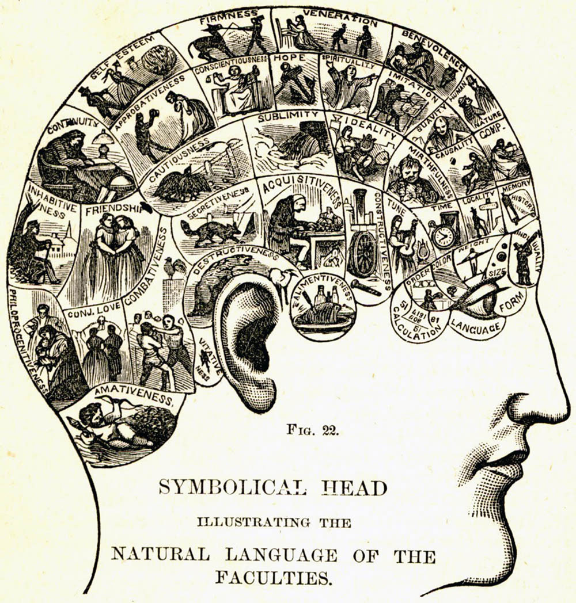
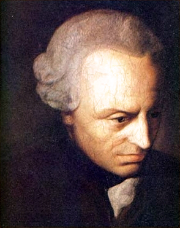
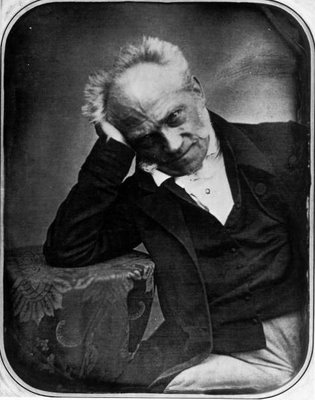
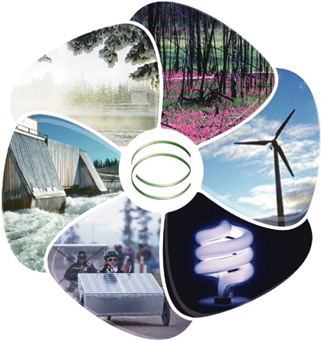
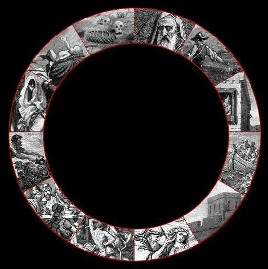

Kant, Schopenhauer ve Varoluş Üstüne
Çok iddaalı başlık attım bea, varoluş maroluş allahh, kesin bunun altında yamulucaz şimdi. Hiç bozuntuya vermeyelim bakalım nerde patlıycaz. Merhaba prensesim güzelim, naber? Bugün konumuz hayli ağır sorma, batı kavramsal dünyasında çok köklü ve büyük bir değişime yol açmaya çalışmış, ama bu çalışmalar sırasında ya yolunu kaybetmiş ya da büyük ölçüde de yanlış anlaşılmış bir iki Alman abiden bahsedicem sana. Biz de yolumuzu kaybedersek hiç şaşırmayasın, kemerleri sıkıca bağlayalım, haydi hayırlısı.
Onsekizinci ve Ondokuzuncu yüzyılda Almanya’da artık havalar mı kötü gitti, hayat çok mu bayıktı her ne olduysa bir seri müthiş düşünür çıktı ortaya prenses. O devreye kadar genelde boktan havası ile meşhur Britanya adasından çıkıyordu büyük felsefeciler, misal bir Locke, bir Hume boş bir kafayla geliyoruz dünyaya, ne öğreniyorsak dünyada deneyimle öğreniyoruz yeminlen derken rahip Berkeley İrlanda asiliğiyle hadi len ordan geyik İngilizler, herşeyi dünyadan öğreniyoruz diyorsunuz ama siz daha gerçek dünya diye bir şey olduğunu bile gösteremezsiniz bana, nerden biliyorsunuz herşeyin kafamızın içinde olup bitmediğini diyerek, empirisizm’ın (herşeyi görerek dokunarak öğreniyoruzculuk) idealizmle (gerçeklik zihinde olup-bitercilik) aslında ne kadar kol kola olduğunu ayyuka çıkardı. Alman bir abinin araya girip kavga etmeyin bakem, ikinizde haklısınız demesi çok sürmeyecekti, bu abının ismi iste Immanuel Kant.
Kant her halde batı felsefesine en büyük etkiyi yapmış düşünür, günümüzde zihinle ilgili psikoloji de olsun cognitive science’da olsun felsefe’de olsun bir çok model kavramsal kökenleri olarak Kant’a gider. Ahlak Felsefesinde, Sanat felsefesinde sunda bunda da çok etkisi olmuştur ama oralara hiç girmiycem, biz zihinde kalalım. Kant’ın en büyük keşfi, onu aşmış düşünür yapan en büyük düşüncesi şudur: Bizim duyu organlarımızla farkında olduğumuz ve etkileşimde olduğumuz dünya senin zihninin inşa ettiği bir fenomen aslında. Bu dünyaya fenomenler dünyası diyelim. Objelerin ve dünyanın bizim zihnimizden bağımsız bir şekilde kendi içlerinde (thing-in-itself) oldukları hali, yanı gerçek dünya ise Noumena (Numen demişler Türkçe’de). Biz numenler dünyasını hiç bir zaman bilemeyiz, o dediğimiz gibi şeylerin kendi içlerinde oldukları hal. Kendi doğaları neyse artık. Bizim gördüğümüz bildiğimiz her şey, bilgisayar, masa, sandalye, bilimsel teoriler vs., herşey bizim duyu organlarımızdan geçip zihnimizce uzay, zaman, neden-sonuç gibi belli formlarda işlenmis. Yani bizim görüp görebileceğimiz bilip bilebileceğimiz her şey fenomenler dünyası ile sınırlı.
Ama ne yazık ki Kant burada durmuyor ve asıl yeni başlıyor, bu temel ayrım üzerine ulen ilginç bir şey buldum ben galiba diyip bir gaza geliyor, bir teoriler argümanlar üretmeye başlıyor orda bildiğin yoldan çıkıyor. Ardına gelsin trancendental (aşkınsal ya da fizikotesi) argümanlarla numenler üzerine ahkam kesmeler (hani biz numenler dünyası hakkında hiç bir şey bilemezdik?), zihnimizin nasıl çalıştığını acayip detaylarla açıklamalar (zihnimiz kendi kendisinin fenomeni olmadığına göre nerden buldun nasıl çalıştığını birader?) daha neler neler. Kant’in bu kontrolden çıktığı kısımlar sadece Kant’la da kalmadı, Alman idealizmi diye anılan koca bir nesli de peşinden sürükledi, Schelling’ler, Fichte’ler, Hegel’ler uçan uçana. Bu devrede yazılan textlerde en çok kullanılan ve ne olduğu en az anlaşılan kelimeler bin bir türlü trancendental hede hodo, noumena ve phenomena. Bu hengameye hiç kapılmayan bir kişi var yalnız, fırtınadan uzakta sessiz sakın evinde yaşayip, her gün köpeğini gezdiren, kadınlardan ve insanlardan belli bir mesafede munzevi yaşamayı seçmiş, dönemine ve çağdaşlarına öfkeyle bakan bir büyük düşünür: Arthur Schopenhauer.
Schopenhauer Kant’in büyük düşünsel keşfinin gerçek anlamını idrak eden ilk filozof, ve Kant gibi gaza gelmeyip bu düşünceyi nihai noktasına kadar azimle takip edip, bu yolculuk boyunca aldığı notları 26 yaşında yazmaya başlayıp 30 yaşında “İstem ve Temsil olarak Dünya” (The World as Will and Representation) adıyla yayımlar. Ömrünün geri kalanını anlaşılmayı beklemekle geçecektir garibimin, ölümüne yakın biraz anladılar ama son pişmanlık neye yarar. Hala da bana batı felsefesinde hakkettiği yeri edinememiş gibi geliyor. (Muhtemelen uçan kaçan haddini aşan teoriler üretmediği için)
Peki, Schopenhauer ne diyor? Kant’ın numenler ve fenomenler dünyası ayrımı ile başlıyor bu abi. Diyor ki Kant harbi aşmış bu ayrımı yapmakla, ne kadar övsem azdır. Ama ortam bu kelimleri abuk sabuk kullanan insanlarla dolu, ben şunları gerçek anlamlarına daha yakın bir şekilde ifade edeyim. Fenomenler dünyası ile başlayalım, bu dediğimiz gibi bizim gördüğümüz bildiğimiz dünya işte, Taksim, istiklal, masa, sandalye falan filan. Bu zihnimiz ürettiği bir fenomense, biz buna temsil diyelim. Sonuçta bu zihnimizin ürettiği şeyler, gerçekte dünyada nasıl olduklarını bilmediğimiz şeylerin yerine geçiyor, onları temsil ediyor, onların yerine duran birer sembol bunlar. Nevizade’nin gerçekte kendi içinde nasıl bir şey olduğunu bilemem, ama zihnimde ki Nevizade temsili ile yolumu bulup yine zihniminde ki bira ve balık temsili ile önümdeki şeylere uzanıp, mideme bira ve balık dediğim şeyleri indirebilirim. Biranın ve balığın kendi içlerinde ne olduğunu bilemeyebilirim, ama mideye indirmesi güzel oluyor onu biliyorum 🙂 Bütün dünyamız bu şekilde bir temsilden ibaret, gerçekte kendi içlerinde ne olduğunu bilmediğimiz şeyleri algımız ve zihnimizle belli kategorilere ayrıp duyusal, kavramsal veya dilsel sembollerle temsil edebiliyoruz güzel bir şekilde. Bu dünyaya temsil dünyası diyelim (the world as representation).(Obje-sembol ilişkileri ile ilgili daha detaylı bir yazı şurada)
Peki ya noumena, numenler dünyası? Şeyler kendi içlerinde ne? Neyse ne be kardeşim sana ne, balık bira mideye indikten sonra ne yapıcan numenini fenomenini. Keyfine bak sen. Schopenhauer inatçı adam tabi, ben balığın biranın gerçekte ne olduğunu bilemezsen ne anladım balıktan biradan, ya hepsi zihnimin bana oynadığı bir oyunsa, bir rüyaysa hiçbir gerçekliği yoksa? Hem balığı birayı bir yana bırak, ben neyim kendi özümde? Acaba balığın, biranın kendimin gerçekte, özünde ne olduğunu bilebilmemizin bir yolu var mi? Temsilin ötesine geçebilir miyiz? Schopenhauer temsilin ötesine geçmeye çalışmamıza gerek yok, tam tersine kendimize doğru dönsek ne olduğunu bulucaz zaten diyor. Senin bir vücudun var mı kardeşim? Var. Bu vücudunu dışardan algılayışınla zihninde bir temsili de var mı kardeşim? Var. Peki, bu vücudu aynı zamanda içinden de algılamıyor musun, zihninde ki temsilinden başka bir şekilde? Senin kontrolün dışında nefes alıp verişini, sıcak bir şeye dokununca hızla kaçışını, yaptığı her hareketinde bazen senin kontrolünde bazen senin kontrolünün dışında orada olan senin temsilinden bağımsız bir şey, seni var kılan bir şey, bir istem var vücudunda. Kendi vücuduna dönüp bakarsan görüceksin (Dipnot budist abiler 20-30 yıl meditasyonla buna kaşıyorlar ama sen yaparsın prenses, bir bakışta, inanıyorum ben, yeminlen). Schopenhauer vücudumuzun numenine istem der, ve temsil dünyasının dışında bizim de parçası olduğumuz bir de istem dünyası var der, bunu vücudumuza dönerek bilebiliriz der. Sadece bizim vücudumuzun değil, dünyada bütün canlı cansız herşeyin numeni istem, kendi vücuduna bakıp bütün istem dünyasını anlayabilirsin.
İstem ne ki dediğini duyar gibiyim prenses? Bizim kavramsal dünyamızın dışında olan ve hiç bir şekilde o dünyaya giremeyecek, girdiği zaman anlamını yitirecek, o dünyayı taşıyan ve vareden bir şeyden bahsederken hangi kelimeyi seçersen seç, işin zor. Sen şimdi zihninle pür dikkat anlamaya çalışıyorsun, ama iste zihninle anlamaya çalıştığın için de tam da o zihnin yüzünden anlayamıyorsun, anladığını sandığın hiç bir şey istem değil onu baştan diyim sonra mızıkçılık olmasın. Nası olucak bu iş? Dediğim gibi budist abiler 20-30 yıl harcıyor bunu gerçekten bilmek için, ama hadi ben sana bir kıyak geçeyim ve kavramsal olarak açıklayayım. Daha sonra gerçekten temsili olarak değil, numen olarak bilmek istersen vücuduna konsantre olup üzerine kasarsın. İstem modern bilimin tabiri ile güç veya enerjiye tekabül ediyor (güç enerjiyle, enerji de güç ile tanımlandığından bilimin de şeylerin özünde ne olduğu hakkında bize bir yardımı yok burada). Matematikte iyiyimdir de fizikte hep bocalarım, ama kabaca doğada ki herşey enerjiden ibaret derler. Her parçacık, obje veya objeler sisteminin her hangi bir konumda belli bir enerjisi vardır. Kinetik, termal, potansiyel, gravitasyonel, ses, ışık, elektromagnetik vs. bir ton farklı formda enerji tanımlanmıştır ama hepsi aynı nane: belli zamanda belli bir güç yaratan bir şey. Bir şeyin başka bir şeyi itirmesi iste. Itirdiğinde yarattığı etki güç, o gücü yaratan şey enerji. En mikro ölçekten en makro ölçeğe kadar herşey birbirini ittirip kaktıran bu ne üdüğü belirsiz abiler iste. Bu nanelerin hepsinin aynı olduğu enerjinin korunumu yasasından da bellidir: Enerjinin bir formu yokolsa bile kapalı bir sistemdeki enerji sabittir ve kaybolan enerji başka bir formda geri gelir. Evrendeki toplam enerji milyonlarca yıldır sabit.
Ama bu ittirip kaktıran ne uduğu belirsiz abiler bazen bir araya gelip birlikte ittirmeye kaktırmaya da başlayabiliyorlar, enerjinin korunumu yasasından tabi bir araya geldiklerin de daha güçlü bir şekilde ittirip kaktırdıklarını tahmin edersin. Schopenhauer bu bir arada hareket eden enerjilere istemin objeleşmesi (objectification of the will) diyor. İnsan zihni bu noktadan itibaren çalışmaya başlıyor, istemin ne olduğunu anlayamıyoruz çünkü o numenler dünyasında ama istem objeleştiği zaman elle tutulur oluyor zihnimizde, bir forma burnuyor, gözle görülür bir etkisi oluyor. Atom alt parçaçıklardan, atomlara, moleküllere, cansız maddelere, kristallere, canlı organizmalara, bitkilere, hayvanalara ve insanlara derken en alt seviyelerinen en üst seviyelere kadar objeleşen istem. Objeleşen istemi bilim kitaplarından bol bol okuyabilirsin, aç bi fizik, astronomi, kimya, biyoloji, zooloji, ekoloji vs. kitabını istediğin katmanda istediğin seviyede objeleşmiş istemin davranışlarını evrimini detayları ile anlatsın sana bilim adamları. Ben ona hiç bulaşmıycam. Ben isteme geri dönüyorum.
Schopenhauer buna neden güç veya enerji değil de istem diyor? Çünkü bilim biz ve bizim dışımızdaki şeyleri araştıran bir alan, yani bilim her zaman fenomenler dünyası ile ilgili. Bilimin buldukları da fenomenler dünyamızı zengileştirmekten öte bir şey değil. Bilim hiç bir zaman bize numenler, istem dünyası hakkında, şeylerin gerçek doğası hakkında bilgi vermez, amacı da bu değil zaten. Bilim daha fazla temsil üretir, o temsilerde bizim hayatımızı kolaylaştirir veya evreni temsili olarak daha iyi anlamamızı sağlar. Schopenhauer ise bizim ancak kendi içimize, vücudumuza bakarak anlayabilceğimiz bir şeyden bahsediyor, hiçbir zaman bir temsile indirgenemeyecek, kavramsal olarak açıklanamayacak, ancak kendimizin keşfedebileceği bir şeyden bahsediyor. Bu yüzden güç veya enerji diyip son tahlilde anlamı zaten istemden daha belirgin olmayan fenomenler dünyasına ait bir terim kullanacağına, yine yanlış anlaşılmaya çok müsait olsa da en azından yönü şaşmayacak, kendi içimize işaret eden bir terim kullanıyor: istem.
Peki bu istem ne menem bir şeydir? Birincisi bu istem denen şey zamanın ve uzayın dışındadır. Kant’in ikinci büyük keşfi de dünyayı zamanda ve uzamda algıladığımızdır. Hani biz dünyayı ancak zihnimizin belli formları ile işlenmiş olarak algılıyoruz demiştik ya, iste duyu organlarımız ve zihnimiz dünyayı algılarken ister istemez onları belli bir zamansal ve uzamsal düzleme oturtarak algılıyor, hatta neden-sonuç ilişkileri ile de iyice kaymak hale getiriyor. Yani zaman ve uzay insan algısının önkoşulu ve insan algısının dışında zaman ve uzay diye şey yok. Zaman ve uzay fenomenlerden yaptığın binanın planıysa, istem de çimentosu. Bunu sindirmesi de temiz bir beş on yıl alır, hiç takmıyorum devam ediyorum prenses sen yaparsın, derin nefes al ki beyne oksijen gitsin. Bu yüzden Kant’in tabiri ile numena, Schopenhauer’in tabiri ile istem zamanın ve uzayın tamamen dışında, zaman ve uzay numen’e işlemiyor. Yani, bütün objeler hep varolmaya çalışır hiç bir zaman olamazken, istem hiçbir zaman varolmaya çalışmıyor çünkü her zaman her yerde hep var. Ama ben insan olarak varolmaya çalışmıyorum varım iste diyorsan bir gün öleceğını ve toprağa karışıp binbir parçaya ayrılacağını hatırlatırım, gayette zamanın ve uzamın içinde varolmaya çalışıyoruz ama olamayacağız, adam haklı beyler. Objeleşmiş istemin değişik formları devamlı devinir durur, formdan forma girip çıkarken, istem öylece duruyor hiç değişmeden. (enerjinin korunumu yasasını hatırlatasın kendine prenses)
Daha da ilginci istem tek ve bölünemez. Bölünebilme, yani iki şeyi bir birinden ayırt edebilme, farklı pozisyonlardaki şeylerin bir birlerine olan etki-tepkilerini farklı zaman dilimlerinde gözlemlemek üzerine yine insan zihnin yarttığı bir şey. Zamanın ve uzayın dışında, her zaman heryerde olan bir şeyin bölünmesinden, parçalarından söz edilemez. Daha önce dediğim gibi, istem objeleştiği zaman algılanabilir ve bölünebilir olur. Bu noktada Schopenhauer benzer düşüncelere sahip bir başka büyük düşünür Spinoza’ya bir saygı selamı çakmayı ihmal etmez tabi. Spinoza da evrenin tek bir şeyden oluştuğunu (Deus sive Natura, yani Tanrı veya Doga) objelerin bu tek seyin nitelikleri ve modları olduğunu savunur. Burada Tanrı demişken bir parantez
acalim, Spinoza’nin Tanrı’sı evreni yaratan veya yöneten bir tanrı değil, neden-sonuç ilişkilerinin yönettiği doğanın kendisi tanrı, yani doğa ile tanrıyı eş anlamlı kullanıyor o yüzden Deus sive Natura. 17.yy’da yaşayan bu aşmış abimizin ait olduğu Amsterdam’daki yahudi cemaatinden aforoz edildiğini söylememe gerek yok herhalde, sağ bıraktıklarına şükretmek lazım. Yaşadığı şehri değiştirdi, lens yontucusu olarak hayatını kazandı ama fikirlerini değiştirmedi inandıklarından vazgeçmedi, klasik bir filozof tavrı. (Sokrat’i da öldürmüşlerdi yine vazgeçmemişti savunduklarından)
Peki, bu her yerde hep olan, bölünmeyen, tek istemden bize ne? Bize bunun şöyle bi etkisi var prenses. Woody Allen‘in filmlerinde kadın-erkek ilişkilerinden başka bol bol işlediği nokta: hiç değişmeyen bir enerjinin sürekli değişen devinen küçük mahluklarıyız ve bu çok anlamsız. İnsanlar, hayvanlar, ağaçlar, okyanuslar, kayalar vs. Devamlı içimizden gelen bir istemle bir şeyler yapmaya bir şeyler başarmaya çalışıyor, kendi küçük zaferlerimizin peşinde koşuyoruz ama varoluş doğası gereği çok saçma ve anlamsız aslında. Bugün varsın ve deviniyorsun, yarın yoksun ve parçaların milyon yere dağılmış, orda başka formlar altında başka devinimler içinde. Ve bunu bilsen de duramıyorsun, devinmeye devam ediyorsun. Sadece saçma ve anlamsız olsa yine iyi, bir de üzerine üstlük sinir sistemi olan canlılar olarak hisleri olan, bir birini üzebilen ve hatta eziyet çektiren varlıklarız, acıyı çeken de çektiren de aynı şeyin parçası olsa da.(bkz. Döngüsel varoluş)
İnsan olarak yine şanslıyız aslında, bir çok şeyi farkedebilecek anlayabilecek gelişmiş bir beynimiz var. Her hangi başka bir canlının kendi hayatına söyle bir bakıp “Yaw ben karnımı doyurayım, çiftleşeyim diye o kadar uğraşıyorum didiniyorum ama olup gidiceksem boşa uğraşıyorum ben” demesi baya düşük bir ihtimal.(Batı toplumlarının bunu farketmesi 2500 yıl almış olabilir, bulduk ya sonunda) Schopenhauer’in de tavsiyesi bu gelişmiş beynimizi kullanmamız yönünde. İstemin kölesi olarak anlamsız bir dünyada sağa sola savrulup acı çekip, acıya sebep olacağımıza, istemeyi bırakmalıyız der, munzevi bir hayat her şeyden elini etiğini çekmek mutlak kurtuluş yolu. (bkz. budist abiler) Birincisi kadar etkili olmasa da ikinci bir yol da sanatçı olmak, sanat üretmek, fenomenler temsiller dünyasından kaçıp estetik imgelerin, idea‘ların dünyasına sığınmak. Çok ünlü bir lafı vardır hani, “Müzigin kendisi bir dünyadır” (Music is a world itself). Müziğin yeri özel olsa da, genel olarak sanatı, estetik deneyimi, temsillerin dünyasından ayrı, sığınılabilecek bir liman olarak görür.
Sanatçı veya münzevi bir kesiş olur musun bilemiyorum prenses. Muhtemelen olmazsın. Yine de elinden geldiği kadar dene derim, bol bol sanata dadan, mümkün mertebe arzuların itkilerinin peşinden sürüklenmek yerine azla yetinmeyi öğren. Az daha fazladır aslında. Sanatçı veya munzevi olmasan da, en azından daha mutlu, huzurlu ve çevrenle uyumlu bir hayatın olur.


{kind=link}
{kind=link}
{kind=link}
{kind=link}
{kind=link}
{kind=link}
Nazım kardeşim,
Eline sağlık, nefis döktürmüşsün yine. Aktı gitti okurken, geri dönüp tekrar tadını çıkarıcam yazının.Dış dünyayı kendi bedenine dönerek anlama ve kavrama konusunda gerçekten aklın yolun birdir diyorum. Bununla ilgili, dinleşmemiş, bir öğreti olarak özünü korumuş budacılık diyor ki; öyle tapınaklara kapanıp dış dünyayla bağlantını kesip sadece içe dönerek anlayabilirsin tüm varolouşu ama esas olan o dünyanın içinde kalmaktır. Budacılık orta yoldur. Yani nevizadede rakı balık önündeyken bedende neler olduğunun farkında olabilmek ve o farkındalığı sürekli koruyarak yaşamak. Böylece hayat nehrinde harekete devam edebilirsin ama hiçbir zaman kafanı içine sokup boğulmazsın. Yoksa dağın tepesindeki tapınakta ver doğayı ver doğayı bende aydınlanırım. Bireysel aydınlanmaya karşıyım arkadaşım, toplumsal sonuçları olmayacaksa…
Dışa bakan rüyadadır, içe bakan uyanışta…
Bir çırpıda okudum valla.
Peki bütün bu düşünsel tutarlılık içinde Schopenhauer’in kadın düşmanlığını nereye koyuyorsun? Herif bir de oturup bunu kendi felsefesi içine tutarlı bir şekilde anlatmaya çalışmış. Yaşadığı zamanın şartlarına mı bağlamak lazım bunu?
Yasadigi zamanin sartlari ile alakali oldugunu sanmiyorum, su anda da yasiyor olsa muhtemelen cok benzer seyleri soylerdi. Schopenhauer zaten su an cok daha yayginlasmis olan, o zamanlar ise Fransada yeni yeni sekillenmekte olan, erkeklerle ayni haklara sahip, saygi duyulan, onure edilen, el ustunde tutulan “the European lady” kavramini elestiriyordu. “The European lady”, daha sonra feminizmle harmanlanip kitlelere yayildi, dunya savaslari sirasinda kapitalist suzgecten gecip market ekonomisi icerisinde de yerini alip 70’lerde hippieler tarafindan cinsel ogeleri cilalaninca gunumuzdeki “kadin” konseptini edindik.
Schopenhauer’in felsefesi de dunyaya bakisi da fizik ve biyoloji gibi temel bilimler uzerine kurulu. Kadinlar konusuna yaklasimi ozellikle biyolojik, adam daha kimse soyobiolojik, evrimsel psikolojik acilamlar yapmadan onlarca yillar once tamamen kadinin ve erkegin biyolojik farkliliklarina bakarak, kulturel konumlandirilmalarinin analizini yapmis. Ne diyor:
“One need only look at a woman’s shape to discover that she is not intended for either too much mental or too much physical work. She pays the debt of life not by what she does but by what she suffers—by the pains of child-bearing, care for the child, and by subjection to man, to whom she should be a patient and cheerful companion. The greatest sorrows and joys or great exhibition of strength are not assigned to her; her life should flow more quietly, more gently, and less obtrusively than man’s, without her being essentially happier or unhappier. ”
Yani kadinin vucuduna baksan zaten ciddi mental veya fiziksel bir is icin evrilmedigini gorursun diyor. Kadinin rolu daha arka planda, cocuk yetistirme ve erkegine eslik etme rolu uzerine kurulu. En azindan fiziksel olarak oyle gorunuyor. Sonra ne diyor:
“With girls, Nature has had in view what is called in a dramatic sense a “striking effect,” for she endows them for a few years with a richness of beauty and a, fulness of charm at the expense of the rest of their lives; so that they may during these years ensnare the fantasy of a man to such a degree as to make him rush into taking the honourable care of them, in some kind of form, for a lifetime—a step which would not seem sufficiently justified if he only considered the matter. ”
Yani kadin, cocuklarinin gelecegini ve bakimini garanti altina almak icin guzelliginin dorugunda oldugu sinirli bir sure icerisinde bir erkegi tavlamak durumunda. Doga buna gore gerekli donanimlari en ekonomik bir bicimde saglamis. Genc kadinlara bakarsan diyor politikadan sunda bundan cok askla, sevgiyle ilgidirler, ve dans etmek, yeni kiyafetler, makyaj gibi seylere cok ciddiyetle yaklasirlar diyor. Sonra muhtemelen bir cok feministi cildirtan argumani geliyor:
“The nobler and more perfect a thing is, the later and slower is it in reaching maturity. Man reaches the maturity of his reasoning and mental faculties scarcely before he is eight-and-twenty; woman when she is eighteen; but hers is reason of very narrow limitations. This is why women remain children all their lives, for they always see only what is near at hand, cling to the present, take the appearance of a thing for reality, and prefer trifling matters to the most important. It is by virtue of man’s reasoning powers that he does not live in the present only, like the brute, but observes and ponders over the past and future; and from this spring discretion, care, and that anxiety which we so frequently notice in people. The advantages, as well as the disadvantages, that this entails, make woman, in consequence of her weaker reasoning powers, less of a partaker in them. Moreover, she is intellectually short-sighted, for although her intuitive understanding quickly perceives what is near to her, on the other hand her circle of vision is limited and does not embrace anything that is remote; hence everything that is absent or past, or in the future, affects women in a less degree than men. This is why they have greater inclination for extravagance, which sometimes borders on madness. Women in their hearts think that men are intended to earn money so that they may spend it, if possible during their husband’s lifetime, but at any rate after his death. ”
Kadinin akil yurutme yetenegi (reason), erkekten daha once ve daha hizli gelisir, ama bu yuzden de erkegin ki kadar gelismez diyor. Bu muhtemelen tutarsiz bir arguman, sirf zamanlama uzerinden boyle bir sonuca varmak cok mantikli degil, ama tesbiti dogru. Daha modern bir terminoji ile kadinin analitik dusunme yetegi fazla gelismez, daha cok duygusal dusunme yetekleri gelismistir denebilir. Duygusal dusunme daha cok simdi burada olanla ilgilidir, tek bir seye odaklanmak yerine daha cok genele bakar. Erkegin ki ise gecmise gider gelecege gider, planlar yapar, stratejileri karsilastirir, daha tek bir seye fokusludur. Kadinlarin bu simdiye ve olanabitene odakli olmalari da aslen bir avantaj olarak gorur:
“women are more sober in their judgment than we, and why they see nothing more in things than is really there; while we, if our passions are roused, slightly exaggerate or add to our imagination.”
Ama is rasyonaliteye geldigi zaman, erkek daha avantajli, cunku rasyonalite bir seye karar verirken olabildigince alternatifleri gozden gecirerek an mantikli, en kazancli opsiyonu secmek uzerine kurulu. Kadinlar bu konuda oldukca kotu.
“It is because women’s reasoning powers are weaker that they show more sympathy for the unfortunate than men, and consequently take a kindlier interest in them. On the other hand, women are inferior to men in matters of justice, honesty, and conscientiousness. Again, because their reasoning faculty is weak, things clearly visible and real, and belonging to the present, exercise a power over them which is rarely counteracted by abstract thoughts, fixed maxims, or firm resolutions, in general, by regard for the past and future or by consideration for what is absent and remote. Accordingly they have the first and principal qualities of virtue, but they lack the secondary qualities which are often a necessary instrument in developing it.”
Schopenhauer fiziksel zayiflik, turun devamligi ve cocuk yetistirmeyi bireyin ustunde gorme, rasyonalite yerine duygusal ve ana odakli bir zihin gibi ozelikler uzerinden incelemesine devam ediyor, ama daha fazla ozetlememe gerek yok herhalde olayi anlamissindir. (ilgilenenler suradan makalenin tamamini okuyabilirler: http://www.theabsolute.net/misogyny/onwomen.html) Kabaca biyolojik sebep-sonuc iliskilerine bakarak, kendi gozlemlerini de harmanlayip kadini yucelten kafa yapisinin aslinda olayin dogasina aykiri oldugunu savunuyor. Schopenhauer’in analizinde ki bir eksik kisim kulturel etkileri hesaba katmamasi, belki o acidan elestirilebilir.
Varmak istediğimiz yere yaklaştıkca, aslında çok daha uzakta olduğunu anlıyoruz. Varmak istediğimiz yerle, bulunduğumuz yeri çok net biliyoruz ama bu ikisini bir türlü bağdaştıramıyoruz mantık çercevesinde. Çok basit olarak ilahi güçler deyip işin içinden çıkmak mümkün tabi. bu gizem insana o kadar derin hazlar veriyor ki. Bu mayyak, zıpkın adamlar hazzın doruklarına ulaşmışlardır kesin. Şu kadarcık makaleden bile o kadar zevk aldım ki. İnşallah en kısa zamanda peygamberliğini ilan edersin…
Yararlıydı, yazanın eline sağlık. Kendi içinde tutarlı olmak ve huzurla yaşamak isteyen düşünmeli, konuşmalı, eski düşünenler ne demiş bakmalı ve sizin gibi daha zor anlayacak olanlara (misalen ben) anlatmalı.
Bu kati surette tekrarlanan yaşam deviniminin sürmesi için “ölme dur sakın” diye bağıran birşey varya hani içimizde , onu sayıklaması için kiralamışlar sanki yoksa çoktan taşınırdık değil mi buralardan ? diye bir soru sorsaydık en anlaşılır dille konuşan şükredilesi felsefe varoşumuz Schpenhauer ne derdi bize , duymak isterdimm : )Tekrar tekrar üstünden geçtiğim birkaç konuya daha yalın ve açıklayıcı bir dille yaklaşmışsın , anlamamı sağlamaya çalışmışsın , kafama sokabildiğim kadar aldım, e bende teşekkür edeyim artık gerçekten çok iyi bir yazı , ellerine sağlık.
Çok güzel bir yazı olmuş; eline sağlık, canım. Aslında, bu alemdeki herşey çok görece. İnsanın alemdeki görevi kadar, ömür dediğimiz şey de. Herşey algıyla ilgili. Biz ortalama 60-70 yıllık bir ömrümüz olduğunu kabullenmişiz ve bu 60-70 yılı baz alarak tüm diğer yaratıklar için de ömür ortalamaları koymuşuz: Köpekler ortalama 12, kediler 15 yıl yaşarken kelebekler 3 gün ile birkaç ay arası yaşar vb. Ama bunların hepsi bizim algımız ve bizim ölçütlerimizle ilgili. Yani, bizim 3 gün diyerek üzüldüğümüz kelebek ömrü, bizim için çabucak tüketilen bir süreçken kelebekler için bir sonraki nesli yetiştirmeye olanak verecek kadar uzun bir süreçse ve bunu gözlemleyerek fark etmişsek; belki farkında olmadığımız, bizden çok daha uzun ömürlü başka bir türün ya da türlerin gözlem konusu da bizim ömrümüzdür!!! Belki de bizim özelliklerimize sahip bir ırkın ne denli yıkıcı ve tüketici olabileceği konulu bir gözlemin farkında olmayan denekleriyiz!
eğelencili bir yazı ama çok yetersiz.Özellikle kant felsefesinde numen-fenomen açıklaması yalnış.Kant ayrıca bunları bağdaştırmaktan bahsediyor.A priori ve a posteriori dahası ^3.eleştiri denilen “yarı gücnün eleştirisinde” ereksiz ereksellikten bahsediyor,”güzel” aracılığıyla.Tabiki bir kant analizi olmadığının farkındayım ama kant’ı açmadan biziim nihilist peluşa geçmek biraz aceleci olmuş
kant’in sarabindan cok fazla icmissin sen firat, ucan kacan terminoloji olmadiginda sana yetersiz gelmesi cok normal. “Yari gucunun elestrisini” okumadim ama “Gereksiz yorumlarin elestirisini” okudum cok basariliydi. Kant felsefesinde numen-fenomen aciklamasinin nesi yanlis anlamadim, soganli karisik terminoloji salatasi yapmak disinda bir sey demedin yani. Ya acik secik anlat yanlis nerde biz de ogrenelim, ya da ereksiz erekseller kovalasin seni ne diyim.